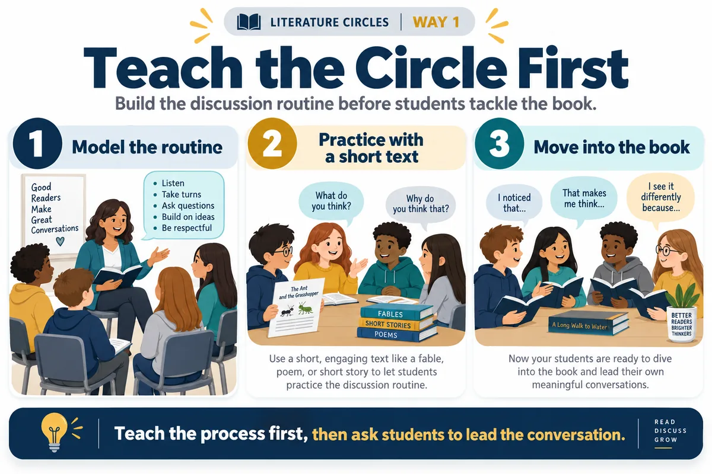
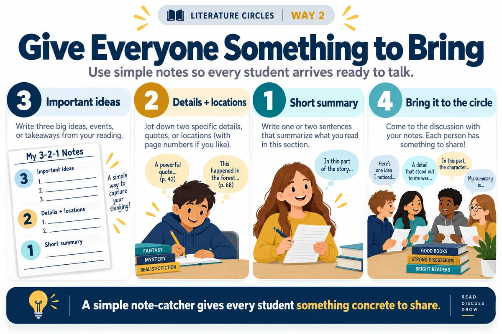
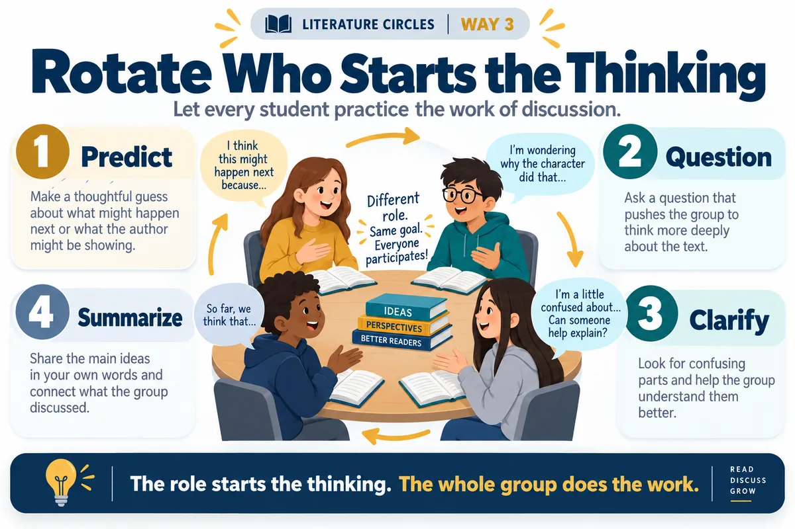
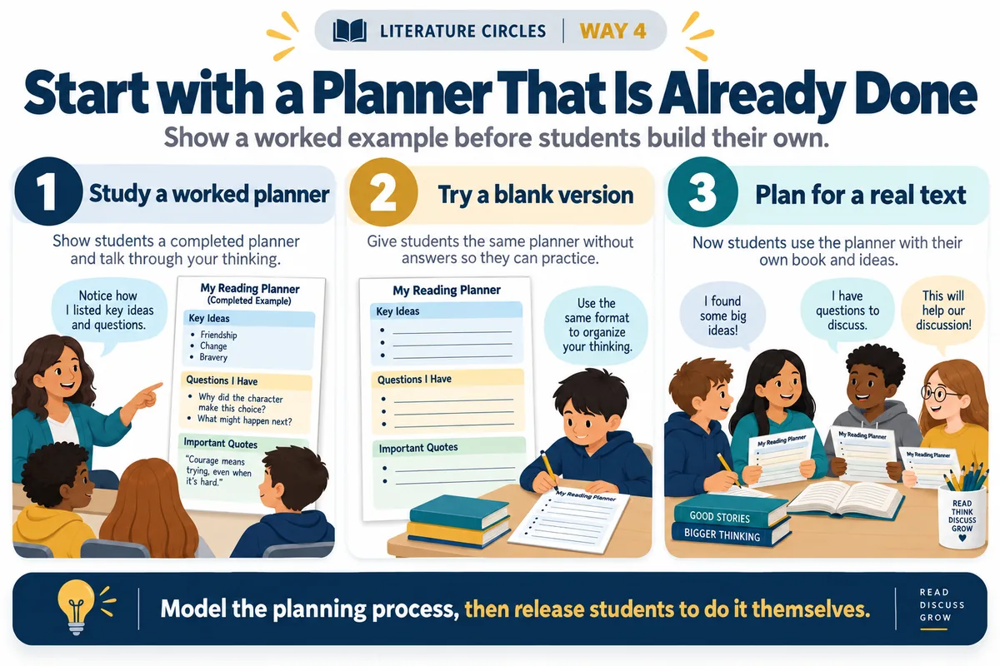
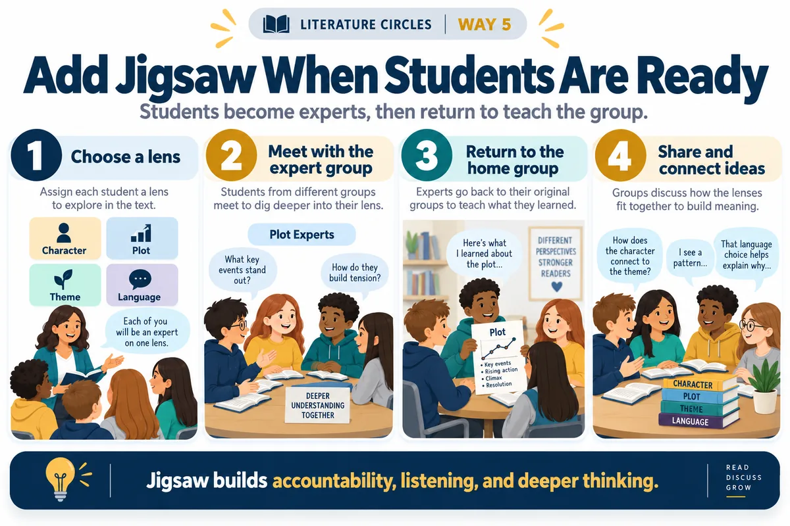

You have put students into groups, handed them a book, and told them to discuss. A few students jump in. Someone else summarizes the entire chapter. Another student has apparently decided that literature circle means “quietly wait for the bell.”
Student-led discussion takes a little more structure than putting desks in a circle. You can also leverage high‑effect‑size instructional strategies, like the 3‑Step Jigsaw and Reciprocal Teaching, which address both surface and deep learning.
This latest Teacher Printables collection gives you that structure. The Literature Circles Launch Kit includes a 21‑page teacher and student packet, reusable organizers, TEKS connections for grades five through twelve, and worked planners for specific texts.
Here are five ways to put it to work.
1. Teach the Circle Before Tackling the Book

Students need to learn how a literature circle works before you expect them to discuss a challenging novel.
The kit includes a 45‑minute launch lesson and a practice reading based on Aesop’s The North Wind and the Sun. Students can practice asking questions, clarifying ideas, summarizing, and bringing evidence to a discussion without wrestling with a new book at the same time.
I like this approach because you can fix the routine before the reading gets complicated.
2. Give Every Student Something to Bring

“Be ready to discuss” leaves a lot of room for interpretation.
Instead, students can use the included 3–2–1 reading notes organizer to bring three important ideas, two supporting details with locations, and one summary. There is also space for questions and vocabulary.
Now students have something concrete sitting in front of them when the conversation starts.
3. Rotate Who Starts the Thinking

Traditional literature‑circle roles sometimes turn into permanent jobs. One student becomes the summarizer. Someone else finds vocabulary. A third student waits patiently for everyone else to finish.
This kit takes a different approach. Students practice four discussion moves — predict, question, clarify, and summarize. Leadership rotates, but everyone still does the thinking. The role tells a student who starts the conversation, not who owns that kind of thinking forever.
4. Start with a Planner That Is Already Done

Sometimes a blank template is less helpful than seeing what a finished one looks like.
The collection includes worked and blank planners for 13 texts across grades five through twelve. You will find short stories, novels, a speech, and a memoir.
Each worked example includes reading chunks, discussion questions, roles, a TEKS target, and completed student notes. The matching blank version keeps the instructional supports but gives students room to do the work themselves.
5. Add Jigsaw When Students Are Ready

Once groups can manage the basic routine, add another layer.
The optional Jigsaw organizer lets students examine a text through lenses such as character, language, plot, theme, or point of view. Students meet with others examining the same lens, then return to their home groups to teach what they noticed.
I’ve found that when students connect with each other in the context of a jigsaw activity, it changes the conversation. Students have to listen, explain, compare, and put several perspectives together.
Grab the Literature Circles Printables
You do not have to build literature circles from scratch. Start with the launch lesson, print only the sections your students need, and try one cycle. Pick a text, print the pages you need, and give your students something worth talking about.
Download the full kit (21-page PDF) Read or print online Title planners
Miguel Guhlin. Transforming teaching, learning, and leadership through the strategic application of technology has been Miguel Guhlin’s motto. His areas of interest flow from his experiences as a district technology administrator, regional education specialist, and classroom educator in bilingual/ESL settings. Learn more at blog.tcea.org and mguhlin.org, or catch him on Mastodon at @mguhlin@zirk.us.